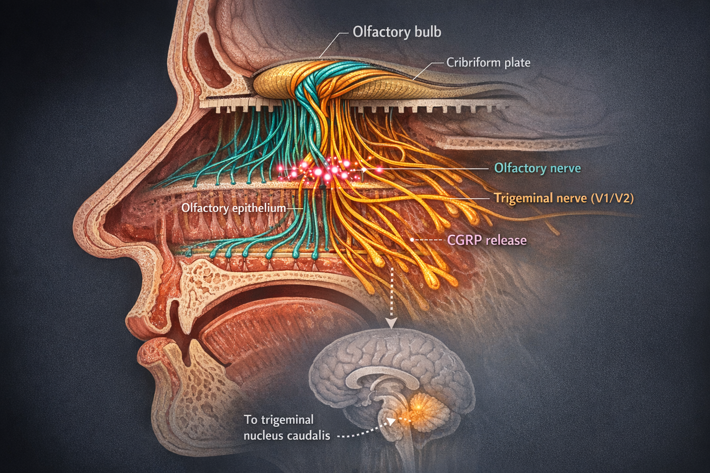

By Rustam Iuldashov
30 years lived experience with chronic migraine | Sources: 24 peer-reviewed references including World J Otorhinolaryngol Head Neck Surg (meta-analysis, n=22,299), Brain (in vitro + rodent), Frontiers in Pain Research (clinical trial, n=80) | Last updated: March 6, 2026
Medical Review: This content is based on peer-reviewed research from World Journal of Otorhinolaryngology, Brain, Cephalalgia, The Journal of Headache and Pain, Scientific Reports, Frontiers in Pain Research, BMJ Open, and Expert Opinion on Therapeutic Targets.
Important Notice: This article is for informational purposes only and does not replace professional medical advice. The author is not a licensed physician or healthcare professional. If you experience sudden, severe headache with new neurological symptoms, call emergency services immediately.
The woman on the subway doesn’t know she is carrying a weapon. It sits in a glass bottle in her handbag, and she dabbed it on her wrists twenty minutes ago. To her, it smells like jasmine and vanilla. To you, it smells like the next six hours of your life spent in a dark room, gripping a pillow, waiting for your brain to release you.
I spent 30 years building a mental blacklist of scents. Certain colognes. Fresh paint. The cleaning aisle at the supermarket. Gasoline. Nail polish. I thought I was simply unlucky — that my nose was defective, oversensitive, broken.
It isn’t broken. It’s wired differently. And the science behind that wiring is one of the most surprising stories in modern migraine research.
Two Nerves, One Nose, Zero Escape
Every breath you take activates not one, but two nerve systems inside your nasal cavity.[17, 21]
The first is the olfactory nerve. It processes what you consciously recognize as “smell” — the rose, the coffee, the garbage truck. The second is the trigeminal nerve — the same nerve that carries migraine pain from your meninges to your brainstem.[14] These two systems don’t merely coexist. Their fibers physically intertwine in the olfactory bulb, like two telephone cables twisted together inside the same conduit.[10, 21]
This matters because most everyday odors are bimodal: they stimulate both nerves simultaneously.[21] Perfume is not just a smell. It is also a chemical irritant that tickles the exact same pain pathway your migraine exploits.

And here is the part that changes everything: when an irritating molecule activates trigeminal endings in your nasal mucosa, those neurons release CGRP — calcitonin gene-related peptide.[10, 11] CGRP is the molecule that modern migraine drugs were built to neutralize. It is the gasoline on the fire of neurogenic inflammation: it dilates blood vessels in the meninges, triggers mast cell degranulation, and sensitizes surrounding pain fibers into a self-perpetuating loop.[11, 12]
Your nose has a direct emergency line to your migraine pain system. During an attack, someone turned the volume to maximum. But even between attacks, the line never fully disconnects.[7, 15]
22,299 Patients. One Clear Answer.
For decades, osmophobia — the aversion to odors during migraine — was a footnote. Photophobia got the funding. Phonophobia got the attention. Smell sensitivity got a shrug.
Then, in 2025, a team led by Briggs and colleagues published the largest meta-analysis ever conducted on osmophobia in migraine.[1] They pooled data from 58 studies across four major medical databases. The sample: 22,299 patients.
Their findings buried the old assumptions.
Prevalence: 47.8% of all migraineurs experience osmophobia — nearly every second patient in a neurologist’s waiting room.[1]
Top trigger: Perfume was the #1 offender among the 40.1% whose attacks were triggered by odors.[1]
Sensory clustering: Patients with osmophobia were significantly more likely to also experience photophobia (OR 1.45), aura (OR 1.66), and nausea (OR 1.73).[1]
Gender gap: 65.7% prevalence in women vs. 48.1% in men (p<0.0001).[1]
Women bore the heaviest burden. The gap almost certainly reflects hormonal modulation of olfactory processing, since smell sensitivity fluctuates with estrogen levels.[20]
And yet, the International Classification of Headache Disorders still does not include osmophobia among its diagnostic criteria for migraine.[5, 8] One prospective study of 193 patients found that osmophobia appeared in 45.7% of migraine-without-aura attacks — and in zero percent of tension-type headache attacks.[5] Zero. The researchers called osmophobia “a specific clinical marker of migraine” with “absolute specificity” and recommended its inclusion in future diagnostic criteria.[5]
The nose, it turns out, has been telling us which headache is which. We just weren’t listening.
The Twist: Is That Trigger Actually a Warning?
Here is where the story takes its sharpest turn.
You walk into a café. Someone’s cologne hits you hard. Two hours later, a migraine arrives. You blame the cologne. You add it to the blacklist. Logic satisfied.
But what if you have the causation backwards?
Imaging studies have shown that brain regions associated with migraine symptoms activate during the prodrome — the silent opening act that can begin up to 48 hours before headache pain.[4, 13] The hypothalamus stirs. The brainstem shifts. Sensory thresholds drop. And your newly hypersensitive brain, already sliding toward an attack, suddenly finds an ordinary smell unbearable.
“The cologne didn’t start the fire. The fire was already burning. The cologne was just the first thing you noticed in the smoke.”
A 2023 cross-sectional study of 101 migraineurs classified odors associated with attacks into six distinct groups: fetid odors, cooking products, oil derivatives, hair care products, cleaning chemicals, and perfumes.[6] The researchers explicitly noted that early manifestation of osmophobia may be the reason patients misattribute certain smells as triggers — when what they’re actually experiencing is a prodromal shift in sensory processing.[6]
But — and this is critical — some smells genuinely do ignite the migraine cascade through direct biochemistry. The proof grows in Northern California.
The California bay laurel, Umbellularia californica, has been called the “headache tree” for centuries. Crush its leaves, inhale, and prepare for pain. In 2012, researchers at the University of Florence discovered why.[2] The tree’s volatile compound, umbellulone, activates TRPA1 receptors on trigeminal neurons — the same ion channels that respond to cigarette smoke, formaldehyde, chlorine, and industrial solvents.[2] TRPA1 activation opens the calcium floodgates, and CGRP pours out.[2] Meningeal blood flow increases. Nociceptors fire. The migraine begins.
⚠️ When to Seek Emergency Help
A sudden, severe headache unlike anything you have experienced before — especially accompanied by neck stiffness, fever, confusion, seizures, double vision, or loss of consciousness — requires immediate emergency evaluation. This may not be a migraine.
If you are experiencing new neurological symptoms, call your local emergency number immediately. Do not use this article to self-diagnose.
The same TRPA1 mechanism applies to dozens of common environmental chemicals.[2] Every time you walk down a freshly bleached hallway or sit behind an idling bus, TRPA1 receptors in your nose are evaluating whether this particular cocktail of molecules will cross the threshold.
So the truth is a both/and, not an either/or. Some scents are genuine biochemical triggers that directly activate your pain system. Others are simply the first signal you notice from a brain already descending into an attack. A migraine diary that tracks smell sensitivity — not just headaches — can help you tell the difference. And that distinction can buy you hours of early warning.[6, 7]
The Price of Time: How Decades of Migraine Reshape Your Nose
In 2022, researchers at TU Dresden examined 113 migraine patients and measured osmophobia across all phases of the disease — before attacks, during attacks, and between attacks.[7]
The results carried a quiet devastation.
Patients who experienced smell sensitivity between attacks — not just during them — had lived with migraine for a median of 28.5 years. Those without interictal osmophobia: 20 years.[7] The difference was statistically significant and pointed toward a troubling hypothesis: the longer you carry this disease, the more sensitized your brain becomes to all sensory input. Each attack leaves a trace. Over years, those traces compound.[7, 15]
This process — called central sensitization — explains why osmophobia so often travels with allodynia, the phenomenon where normally painless touch becomes painful.[8, 19] The same sensitized nervous system that makes perfume intolerable also makes brushing your hair agonizing, wearing a necklace unbearable, or feeling a shirt collar against your neck excruciating.[13, 19] In one study of 2,883 headache patients, migraineurs with osmophobia scored significantly higher on the Hospital Anxiety and Depression Scale than those without it.[8]
Migraine patients tend to have smaller olfactory bulbs than healthy controls — and patients with osmophobia have even smaller ones. The organ that processes smell is physically altered by the disease it serves.[24]
This is not a story about weakness. It is a story about a nervous system that has been working overtime for decades, and the toll that vigilance extracts.
Fighting Back with Flowers: The Science of Olfactory Training
Now for the part that changed my thinking entirely.
If chronic migraine sensitizes the olfactory-pain network over time, could you deliberately desensitize it? Could you retrain a nose that has learned to fear?
In 2023, researchers at TU Dresden tested exactly this.[3] Eighty children and adolescents with migraine or tension-type headache were divided into two groups. Forty received standard outpatient care. The other forty did something remarkably simple: they sniffed three personally chosen pleasant scents — selected from rose, orange, lavender, chocolate, cinnamon, and others — for about 10 seconds each, twice daily, for three months.[3]
The results were unambiguous.
Pain thresholds: The olfactory training group showed significantly increased electrical pain thresholds — their nervous systems had measurably recalibrated toward less pain sensitivity.[3]
Disability: Improvement on the PedMIDAS headache disability scale.[3]
Control group: No comparable changes with standard outpatient care alone.[3]
The mechanism is elegant. The olfactory network and the pain-processing network share key structures: the insular cortex, the cingulate gyrus, the hippocampus.[3, 17] Regular exposure to pleasant, non-threatening scents appears to modulate activity at this crossroads — rewriting the association between “something entered my nose” and “danger.”[3, 22]
Think of it as physical therapy for your trigeminal system. Not avoidance. Rehabilitation.
A double-blind, randomized, placebo-controlled trial — the gold standard — is now testing a 12-week olfactory training protocol in adult women with migraine with aura at the same institution, using functional MRI to track brain changes in real time.[9] If the results hold, structured scent exposure could become the first non-pharmacological treatment to directly target the olfactory-pain axis in migraine.
No side effects. No prescriptions. Three pleasant smells, twice a day, ten seconds each.[3, 22] Sometimes the simplest interventions carry the deepest science.
Seven Things You Can Do Before Your Next Attack
1. Track smell sensitivity, not just pain.
Note in your migraine diary any moment when odors seem unusually strong or unpleasant — even if no headache follows. This is prodrome data. It may give you a 24–48 hour head start on your next attack.[4, 7]
2. Separate alarms from triggers.
If perfume bothers you at 9 AM and a migraine arrives at 2 PM, the perfume may not have caused the attack — your brain may have already entered the prodrome.[6] Use this information to take acute medication earlier, when it works best.
3. Know your six categories.
Research identifies six groups of problem odors: perfumes, cleaning products, cooking fumes, oil/gasoline derivatives, hair care products, and fetid odors.[6] Knowing your category lets you make targeted changes instead of avoiding the entire world.
4. Switch to unscented products at home.
Laundry detergent, soap, shampoo, cleaning sprays — many come in unscented formulas. This single change reduces your daily chemical baseline without any lifestyle sacrifice.[1, 6]
5. Start olfactory training.
Choose three pleasant scents that don’t bother you (rose, lemon, and clove are common in clinical protocols). Sniff each gently for 10 seconds, twice daily.[3] Consistency matters more than intensity. Three months is the minimum effective duration in published research.[3, 22]
6. Ventilate with intention.
If someone in your home is cooking or using strong products, open windows during and after. Schedule errands during cooking times if food odors are a problem. A small fan near your workspace can redirect ambient scents away from you.
7. Name it so others can understand it.
Osmophobia is invisible. A calm, brief explanation — “Strong scents trigger severe neurological pain for me; it’s a medical condition” — opens more doors than silence ever will.
Key Takeaways
- Nearly half (47.8%) of all migraineurs experience osmophobia; perfume is the #1 reported offender (2025 meta-analysis, n=22,299)[1]
- Your nose connects directly to the migraine pain system through the trigeminal nerve, which releases CGRP when stimulated by chemical irritants[10, 11, 12]
- What feels like a smell “trigger” may actually be a prodromal warning — your brain’s alarm that an attack has already begun[4, 6]
- The longer you live with migraine, the more sensitized your nervous system becomes to odors — linked to disease duration and allodynia[7, 19]
- Osmophobia shows absolute specificity for migraine vs. tension-type headache — it may be the most underused diagnostic marker[5]
- Olfactory training with pleasant scents for 3 months significantly raised pain thresholds in young migraine patients; adult RCTs are underway[3, 9]
When to See a Doctor
- You experience a sudden, severe headache with new neurological symptoms (vision loss, weakness, confusion)
- Your smell sensitivity has changed dramatically in type, frequency, or intensity
- You experience olfactory hallucinations (smelling things that are not there) during or between attacks
- Osmophobia is significantly affecting your quality of life, work, or relationships
- You want to start olfactory training and need guidance on integrating it with your current treatment plan
This article is a starting point for conversation with your doctor, not a replacement for medical care.
⚕️ Important Medical Disclaimer
This article is for informational and educational purposes only and does not constitute medical advice, diagnosis, or treatment. The author, Rustam Iuldashov, is not a licensed physician, neurologist, or healthcare professional. He is a patient advocate with 30 years of personal experience living with chronic migraine.
All clinical claims in this article are sourced from peer-reviewed research published in indexed medical journals. Study designs and sample sizes are noted where applicable.
Always consult a qualified healthcare provider for questions about your individual health, migraine treatment, or medication decisions.
This content was last reviewed for accuracy on March 6, 2026.
References
- Briggs RE, et al. “Osmophobia in Patients With Migraine: A Systematic Review and Meta-Analysis.” World J Otorhinolaryngol Head Neck Surg, 2025. doi:10.1002/wjo2.70069. Systematic review & meta-analysis. n=22,299.
- Nassini R, Materazzi S, Vriens J, et al. “The ‘headache tree’ via umbellulone and TRPA1 activates the trigeminovascular system.” Brain, 135(2):376–390 (2012). doi:10.1093/brain/awr272. In vitro + rodent experimental.
- Gossrau G, Zaranek L, Klimova A, et al. “Olfactory training reduces pain sensitivity in children and adolescents with primary headaches.” Front Pain Res, 4:1091984 (2023). doi:10.3389/fpain.2023.1091984. Clinical trial. n=80.
- Stankewitz A, May A. “Increased limbic and brainstem activity during migraine attacks following olfactory stimulation.” Neurology, 77(5):476–482 (2011). doi:10.1212/WNL.0b013e318227e4a8. fMRI. n=20 + 13 ictal.
- Terrin A, et al. “A prospective study on osmophobia in migraine versus tension-type headache in a large series of attacks.” Cephalalgia, 2019. doi:10.1177/0333102419877661. Prospective. n=193.
- Imai N, Osanai A, Moriya A, et al. “Classification of odors associated with migraine attacks: a cross-sectional study.” Sci Rep, 13:8469 (2023). doi:10.1038/s41598-023-35045-z. Cross-sectional. n=101.
- Haehner A, et al. “Interictal osmophobia is associated with longer migraine disease duration.” J Headache Pain, 23:93 (2022). doi:10.1186/s10194-022-01451-7. Cross-sectional. n=113.
- Chen WT, et al. “Clinical correlates and diagnostic utility of osmophobia in migraine.” Cephalalgia, 2012. doi:10.1177/0333102412461400. Retrospective. n=2,883.
- Faria V, Dulheuer J, Joshi A, et al. “Impact of a 12-week olfactory training programme in women with migraine with aura: protocol for a double-blind, randomised, placebo-controlled trial.” BMJ Open, 13:e071443 (2023). doi:10.1136/bmjopen-2022-071443. RCT protocol. n=54.
- Kesserwani H. “Migraine Triggers: An Overview of the Pharmacology, Biochemistry, Atmospherics, and Their Effects on Neural Networks.” Cureus, 13(4):e14243 (2021). doi:10.7759/cureus.14243. Narrative review.
- Durham PL. “Calcitonin Gene-Related Peptide (CGRP) and Migraine.” Headache, 46(Suppl 1):S3–S8 (2006). doi:10.1111/j.1526-4610.2006.00483.x. Review.
- Russo AF. “Calcitonin gene-related peptide (CGRP): Role in migraine pathophysiology and therapeutic targeting.” Expert Opin Ther Targets, 24(2):91–100 (2020). doi:10.1080/14728222.2020.1724285. Review.
- Schwedt TJ. “Multisensory Integration in Migraine.” Curr Opin Neurol, 26(3):248–253 (2013). doi:10.1097/WCO.0b013e328360edb9. Review.
- Burstein R, et al. “Migraine pathophysiology: anatomy of the trigeminovascular pathway and associated neurological symptoms, CSD, sensitization and modulation of pain.” Pain, 154(Suppl 1):S44–S53 (2012). doi:10.1016/j.pain.2013.01.021. Review.
- Henderson LK, et al. “Exploring alterations in sensory pathways in migraine.” J Headache Pain, 23:5 (2022). doi:10.1186/s10194-021-01371-y. fMRI. n=32.
- Fornazieri MA, et al. “Olfactory symptoms reported by migraineurs with and without auras.” Headache, 56(10):1608–1616 (2016). doi:10.1111/head.12973. Cross-sectional. n=113.
- Li J, et al. “Olfactory abnormalities in patients with migraine: a narrative review.” J Oral Facial Pain Headache, 39(4):31–37 (2025). doi:10.22514/jofph.2025.065. Narrative review.
- Silva-Néto RP, et al. “Evaluation of the Frequency and Intensity of Osmophobia Between Headache Attacks in Migraine Patients Through an Osmophobia Diary.” J Neurol Res, 2015. doi:10.14740/jnr323w. Prospective. n=400.
- De Tommaso M, et al. “Osmophobia in primary headache patients: associated symptoms and response to preventive treatments.” J Headache Pain, 22:109 (2021). doi:10.1186/s10194-021-01327-2. Retrospective cohort. n=711.
- Silva-Néto RP, et al. “May headache triggered by odors be regarded as a differentiating factor between migraine and other primary headaches?” Cephalalgia, 37(1):20–28 (2017). doi:10.1177/0333102416636098. Experimental.
- Sjöstrand C, et al. “Migraine and Olfactory Stimuli.” Curr Pain Headache Rep, 14(3):244–251 (2010). doi:10.1007/s11916-010-0109-7. Review.
- Pieniak M, et al. “Olfactory training — thirteen years of research reviewed.” Neurosci Biobehav Rev, 141:104853 (2022). doi:10.1016/j.neubiorev.2022.104853. Systematic review.
- Russell FA, et al. “CGRP physiology, pharmacology, and therapeutic targets: migraine and beyond.” Physiol Rev, 2023. doi:10.1152/physrev.00059.2021. Comprehensive review.
- Aktürk T, et al. “Olfactory bulb atrophy in migraine patients.” Neurol Sci, 40(1):127–132 (2019). doi:10.1007/s10072-018-3597-6. Imaging study.

How We Create Content
- Peer-reviewed sources only. World J Otorhinolaryngol, Brain, Cephalalgia, J Headache Pain, Scientific Reports, Frontiers in Pain Research, BMJ Open, Neurology, Expert Opin Ther Targets.
- Study transparency. Study design and sample sizes noted for all clinical references.
- Source verification. All claims backed by numbered references with DOI links.
- Experience + Science. 30 years personal migraine experience combined with peer-reviewed evidence.
- Regular updates. Articles reviewed when significant new research emerges.
- No conflicts of interest. No funding from pharma, device manufacturers, or supplement companies.
Track Your Smell Triggers with Mi
Migraine Companion helps you log odor sensitivity, prodrome signs, and trigger patterns — building the personal dataset that turns invisible signals into actionable insight.
Last reviewed: March 2026
Next scheduled review: September 2026